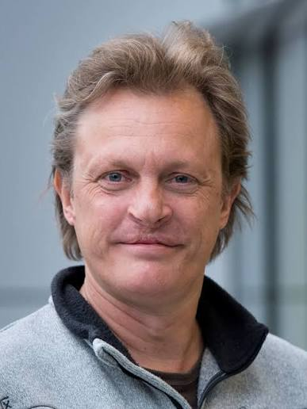

The Philippine crocodile is the rarest crocodile species on Earth. By the 1990s it was presumed functionally extinct in the wild, with no verified sightings in decades. In 1999, a joint Filipino-Dutch survey team searching the Cagayan Valley found a handful of surviving adults, an estimated 20 individuals in total. That discovery led directly to the founding of the Mabuwaya Foundation in 2003 by Leiden ecologist Merlijn van Weerd, together with Jan van der Ploeg and Tess Gatan-Balbas.
The species' problem was never only ecological. Many non-residents in northern Luzon feared or actively killed crocodiles on sight, while land conversion, pollution, and overfishing kept eroding what habitat remained. As van Weerd has put it, protecting a species with such a negative reputation requires more than good science, it requires the communities living alongside the animal to actually want it there.
What changed
Mabuwaya's approach combined research, habitat protection, and community-based conservation: training local "Bantay Sanktuwaryo" (sanctuary wardens) to monitor nesting sites and enforce protections, running a head-starting programme that raises hatchlings in captivity until they're around a year old (lifting survival odds from roughly 5% in the wild to around 80%), and building a network that now spans 17 community-conserved freshwater protected areas across San Mariano and Divilacan. More than 100 head-started crocodiles have been released back into the wild. The wild population in the region has grown from a single known adult in 1999 to around 125 individuals by 2024.
In the field

"The Philippines are the testing ground of the world," says Merlijn. "When can dying species still be saved? When does an ecosystem collapse? We don't know. The Philippines offer a glimpse of what is to come. It's a warning to the rest of the world. At the same time, it's where we can see what you can still do."Dr. Merlijn van Weerd, Mabuwaya Foundation / Leiden University
Why it matters
Mabuwaya is now the largest environmental community-based organisation working in north-eastern Luzon, and its model, conservation built around the people who actually share the land with the species, has become a reference point for community-based conservation elsewhere. The Philippine crocodile is still critically endangered. But for the first time in decades, its population is moving in the right direction.
← Back to Living Proof